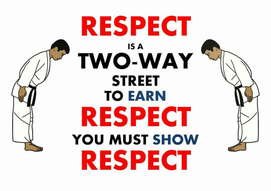

My personal definition of citizenship is the components that an individual must possess to be a positive contributor to society. The first componenet, onesty can be summarized as simply being truthful to your peers. Honesty is essential to citizenship because without honesty a person cannot be trusted and therefore can't contribute to society. The next component, courage, can be defined as being brave and not afraid to tackle your fears. Courage is essential to citizenship because without it people wouldn't be able to be resilient, or tackle tough tasks. The next component of citizenship is respect. Respect can best be defined as not looking down on anyone, and treating everyone well. Respect is key to good citizenship because without it people wouldn't be able to cooperate and work well together. The fourth component of good citizenship is responsibility. Responsibility is the obligations that an individual has to do in order to better society. Responsibility is essential to good citizenship because it is how things get done. Another component of citizneship is communication. Communication is the verbal, or written exchange of messages between two or more people. Communication plays a large role in citizenship because without it people would not be able know or udnerstand the thoughts of their peers. The final component of good citizenship is compassion. Compassion is feelings of sympathy or love for others; basically just caring about people other then yourself. Compassion is essential to good citizenship because without it people would be lonely, and wouldn't be able to function at the same capabilities. The moat recent act of powerful citizenship that I performed was getting a lot of household chores done for my family. This would fit udner the category of responsibility, because they are things that have to be done, however by doing them it makes my family's life easier and therefore betters society.
Image from http://thumbpress.com/r-e-s-p-e-c-t/#sthash.dz1jvOgV.dpbs